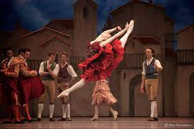
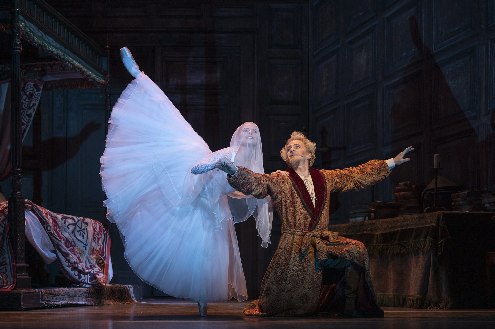
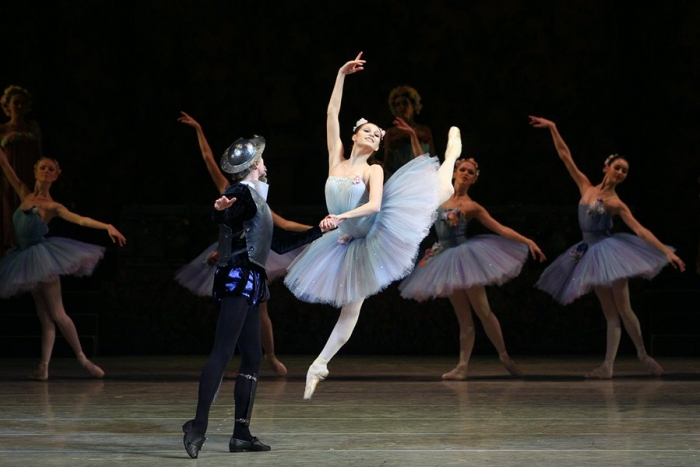
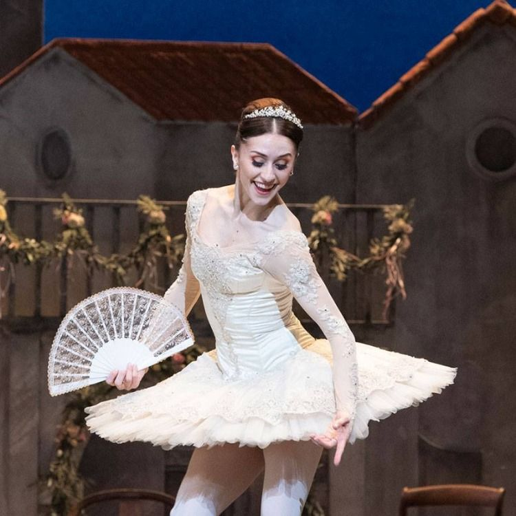

Olá bailarino(a) ou interessado na dança! Quer saber mais sobre o enredo do ballet clássico Dom Quixote? Está no site correto! Confira abaixo:
>Compositor musical: Ludwing Minkus;
Coreógrafos: Marius Petipa e Alexander Gorsky;
Estreia: Teatro Bolshoi (1869);
Prólogo: Dom Quixote, após ter uma visão de Dulcinea (mulher pela qual é apaixonado)o chamando, parte em uma busca por ela com seu fiel amigo Sancho Panza.
>No primeiro ato: O ballet se inicia na vila de Servilha, onde há uma moça alegre que adora dançar, Kitri, e Basílio, um barbeiro e os dois pretendem se casar. Porém, Lorenzo, pai de Kitri, não quer que o casamento ocorra, já que Basílio é só um barbeiro e não possui riquezas, o pai quer que a filha case com Gamache, um nobre. Dom Quixote e Sancho Panza chegam em Servilha e Dom Quixote pensa que Kitri é sua amada Dulcinea, devido à semelhanças.
Kitri e Basílio, aconselhados por Mercedes e Espada, seus amigos da vila, seguem Dom Quixote e Sancho Panza até um acampamento cigano, onde se estabelecem. Lorenzo vai procurá-los para firmar o casamento com Gamache.
No segundo ato: Dom Quixote luta contra moinhos de vento acreditando serem monstros, para defender Dulcinea (Kitri). Com isso, o personagem acaba entrando em um sono profundo, onde sonha com Dulcinea, Rainha das Dríades e Cupido.
Em seguida, todos fogem para um Taverna, onde Kitri e Basílio são descobertos por Lorenzo. Com um plano em mente, Basílio finge suicídio, por não poder ficar com Kitri, então a moça pede ao pai que ela possa casar-se com o cadáver de Basílio, que permite, assim Basílio "ressuscita" e se casam.
>No terceiro ato: O grande casamento ocorre e toda a vila fica em festa, Dom Quixote, ao perceber que Kitri não é Dulcinea, se despede e continua a busca por sua amada.
>